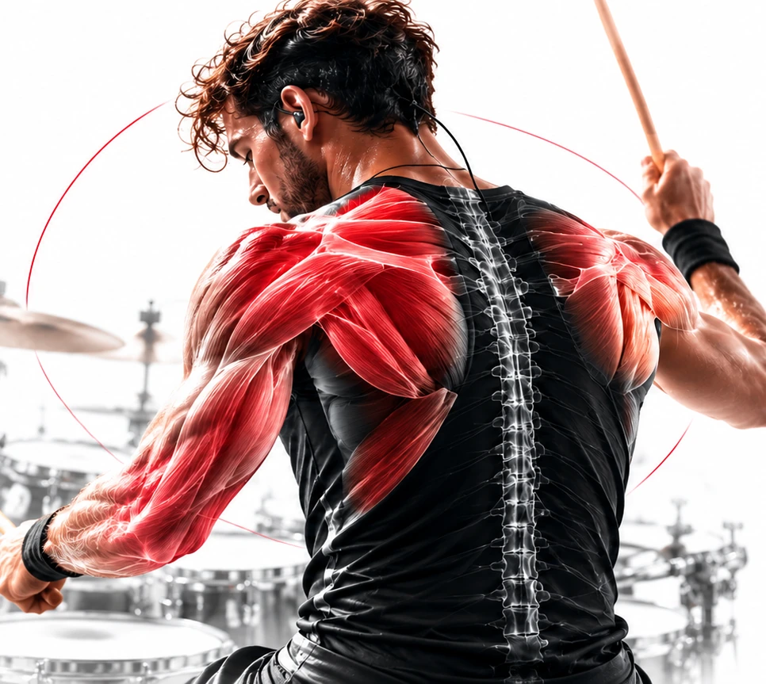
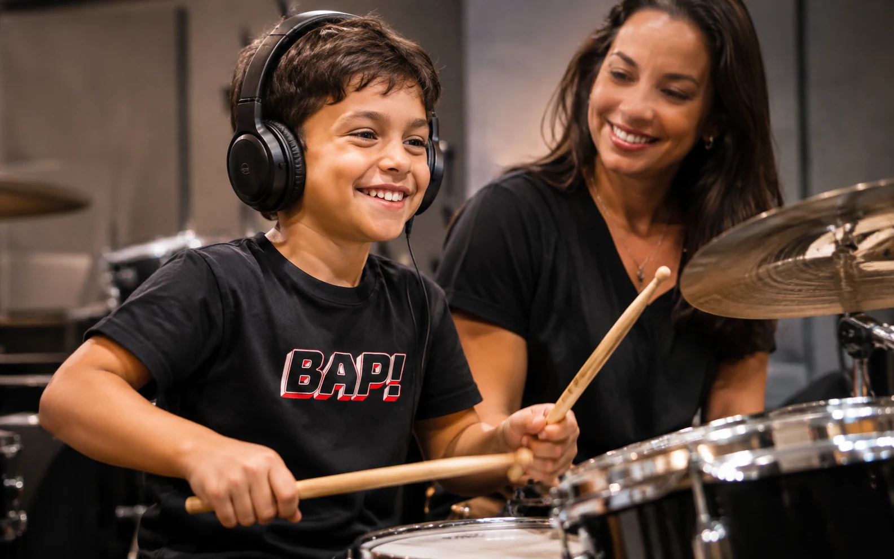

MÚSICA, MOVIMENTO E CONSCIÊNCIA CORPORAL
SEU CORPO
TAMBÉM É
INSTRUMENTO.
Aprenda bateria com mais consciência, técnica e cuidado com a saúde em cada fase da sua jornada.
Para músicos, famílias, professores e instituições.

COM MAIS CONSCIÊNCIA.
PARA QUEM É O MÉTODO BAP
ESCOLHA O SEU
CAMINHO.
Um método para bateristas, famílias,
professores e instituições.
uma orientação personalizada com base nos
seus objetivos e na sua realidade.
PARA QUEM VOCÊ PROCURA O MÉTODO BAP?
Escolha a opção que melhor representa sua necessidade.
BAP PRIMEIROS RITMOS
MÚSICA COM
SAÚDE, DESDE A
PRIMEIRA AULA.

Um mundo de possibilidades.
Aprender música é descobrir o ritmo, o movimento e o próprio corpo. Uma experiência lúdica para desenvolver bons hábitos desde o início.
coordenação
corporal
lúdica
Uma proposta acompanhada por responsáveis e educadores.
Conteúdo educativo; não substitui cuidados profissionais.
BAP EDUCAÇÃO
PARA ESCOLAS, CONSERVATÓRIOS E PROJETOS SOCIAIS.
Imagine integrar consciência corporal à formação de estudantes de bateria e percussão, com atividades adequadas a cada fase, orientação aos professores e práticas educativas que acompanhem a aprendizagem.
OS PILARES DO MÉTODO BAP
MOVIMENTO
Técnica eficiente e consciência corporal.
TÉCNICA
Mais controle e melhor desempenho.
SAÚDE
Hábitos de prática e atenção ao corpo.
LONGEVIDADE
Uma vida inteira de música.
CONHEÇA O MÉTODO BAP
VEJA O MÉTODO
EM AÇÃO.
Vídeos com explicações, exemplos práticos e depoimentos de bateristas que já aplicam o método.
ASSISTA AOS VÍDEOS TIAGO GUIMARÃES CONHEÇA O MÉTODO BAP
TIAGO GUIMARÃES CONHEÇA O MÉTODO BAPO QUE OS BATERISTAS FALAM
EXPERIÊNCIAS COM O MÉTODO BAP.
Conheça experiências de alunos e profissionais. Depoimentos reais serão publicados aqui após autorização dos participantes.
COMPARTILHE SUA EXPERIÊNCIA04 / CONTINUE EXPLORANDO